本次我们来讲解下如何在k8s上搭建gitlab，并且通过gitlab内Pipeline的ci/cd将代码部署到k8s集群内。
本次k8s环境基于tke托管集群1.18进行测试，镜像仓库使用的是腾讯云的ccr仓库。
搭建gitlab 部署gitla需要部署三个服务，分别是redis、postgresql、gitlab这三个服务，下面我们来讲解具体部署及部署yaml文件
我们先创建一个gitlab的命名空间，后续部署的所有服务都在这个命名空间下
1 kubectl create ns gitlab
redis部署 redis服务是提供给Gitlab服务使用，并不需要暴露在集群外部，因此我们在gitlab<->redis之间调用的时候，采用内部通信的方式
1 2 3 4 5 6 7 8 9 10 11 12 13 14 15 16 17 18 19 20 21 22 23 24 25 26 27 28 29 30 31 32 33 34 35 36 37 38 39 40 41 42 43 44 45 46 47 48 49 50 51 52 53 54 55 56 57 58 59 60 apiVersion: apps/v1 kind: Deployment metadata: name: redis namespace: gitlab labels: name: redis spec: selector: matchLabels: name: redis template: metadata: name: redis labels: name: redis spec: containers: - name: redis image: sameersbn/redis imagePullPolicy: IfNotPresent ports: - name: redis containerPort: 6379 volumeMounts: - mountPath: /var/lib/redis name: data livenessProbe: exec: command: - redis-cli - ping initialDelaySeconds: 30 timeoutSeconds: 5 readinessProbe: exec: command: - redis-cli - ping initialDelaySeconds: 5 timeoutSeconds: 1 volumes: - name: data emptyDir: {} --- apiVersion: v1 kind: Service metadata: name: redis namespace: gitlab labels: name: redis spec: ports: - name: redis port: 6379 targetPort: redis selector: name: redis
postgresql部署 postgresql部署主要存储gitlab的数据使用
1 2 3 4 5 6 7 8 9 10 11 12 13 14 15 16 17 18 19 20 21 22 23 24 25 26 27 28 29 30 31 32 33 34 35 36 37 38 39 40 41 42 43 44 45 46 47 48 49 50 51 52 53 54 55 56 57 58 59 60 61 62 63 64 65 66 67 68 69 70 71 72 73 74 75 76 apiVersion: apps/v1 kind: Deployment metadata: name: postgresql namespace: gitlab labels: name: postgresql spec: selector: matchLabels: name: postgresql template: metadata: name: postgresql labels: name: postgresql spec: containers: - name: postgresql image: sameersbn/postgresql:10 imagePullPolicy: IfNotPresent env: - name: DB_USER value: gitlab - name: DB_PASS value: passw0rd - name: DB_NAME value: gitlab_production - name: DB_EXTENSION value: pg_trgm ports: - name: postgres containerPort: 5432 volumeMounts: - mountPath: /var/lib/postgresql name: data livenessProbe: exec: command: - pg_isready - -h - localhost - -U - postgres initialDelaySeconds: 30 timeoutSeconds: 5 readinessProbe: exec: command: - pg_isready - -h - localhost - -U - postgres initialDelaySeconds: 5 timeoutSeconds: 1 volumes: - name: data persistentVolumeClaim: claimName: gitlab-postgresql --- apiVersion: v1 kind: Service metadata: name: postgresql namespace: gitlab labels: name: postgresql spec: ports: - name: postgres port: 5432 targetPort: postgres selector: name: postgresql
gitlab部署 gitlab服务的部署就相对复杂一些，要添加正确的redis和postgresql的链接信息，同时为了在集群外部访问gitlab,我们需要用treafik给gitlab配置一个ingress,所以最后的时候我们需要给gitlab的服务分配一个测试域名，我们这里的域名是gitlab.k8s.niewx.cn，treafik的搭建可以参考我之前的文章。
1 2 3 4 5 6 7 8 9 10 11 12 13 14 15 16 17 18 19 20 21 22 23 24 25 26 27 28 29 30 31 32 33 34 35 36 37 38 39 40 41 42 43 44 45 46 47 48 49 50 51 52 53 54 55 56 57 58 59 60 61 62 63 64 65 66 67 68 69 70 71 72 73 74 75 76 77 78 79 80 81 82 83 84 85 86 87 88 89 90 91 92 93 94 95 96 97 98 99 100 101 102 103 104 105 106 107 108 109 110 111 112 113 114 115 116 117 118 119 120 121 122 123 124 125 126 127 apiVersion: apps/v1 kind: Deployment metadata: name: gitlab namespace: gitlab labels: name: gitlab spec: selector: matchLabels: name: gitlab template: metadata: name: gitlab labels: name: gitlab spec: containers: - name: gitlab image: sameersbn/gitlab:11.8.1 imagePullPolicy: IfNotPresent env: - name: TZ value: Asia/Shanghai - name: GITLAB_TIMEZONE value: Beijing - name: GITLAB_SECRETS_DB_KEY_BASE value: long-and-random-alpha-numeric-string - name: GITLAB_SECRETS_SECRET_KEY_BASE value: long-and-random-alpha-numeric-string - name: GITLAB_SECRETS_OTP_KEY_BASE value: long-and-random-alpha-numeric-string - name: GITLAB_ROOT_PASSWORD value: admin123456 - name: GITLAB_ROOT_EMAIL value: nwx_qdlg@163.com - name: GITLAB_HOST value: gitlab.k8s.niewx.cn - name: GITLAB_PORT value: "80" - name: GITLAB_SSH_PORT value: "30022" - name: GITLAB_NOTIFY_ON_BROKEN_BUILDS value: "true" - name: GITLAB_NOTIFY_PUSHER value: "false" - name: GITLAB_BACKUP_SCHEDULE value: daily - name: GITLAB_BACKUP_TIME value: 01 :00 - name: DB_TYPE value: postgres - name: DB_HOST value: postgresql - name: DB_PORT value: "5432" - name: DB_USER value: gitlab - name: DB_PASS value: passw0rd - name: DB_NAME value: gitlab_production - name: REDIS_HOST value: redis - name: REDIS_PORT value: "6379" ports: - name: http containerPort: 80 - name: ssh containerPort: 22 volumeMounts: - mountPath: /home/git/data name: data livenessProbe: httpGet: path: / port: 80 initialDelaySeconds: 180 timeoutSeconds: 5 readinessProbe: httpGet: path: / port: 80 initialDelaySeconds: 5 timeoutSeconds: 1 volumes: - name: data persistentVolumeClaim: claimName: gitlab --- apiVersion: v1 kind: Service metadata: name: gitlab namespace: gitlab labels: name: gitlab spec: ports: - name: http port: 80 targetPort: http - name: ssh port: 22 targetPort: ssh nodePort: 30022 type: NodePort selector: name: gitlab --- apiVersion: traefik.containo.us/v1alpha1 kind: IngressRoute metadata: name: gitlab-webui namespace: gitlab spec: entryPoints: - web routes: - match: Host(`gitlab.k8s.niewx.cn`) kind: Rule services: - name: gitlab port: 80
验证登录gitlab 在浏览器输入http://gitlab.k8s.niewx.cn/，然后输入之前在gitlab中配置的账号密码能成功登录即部署成功
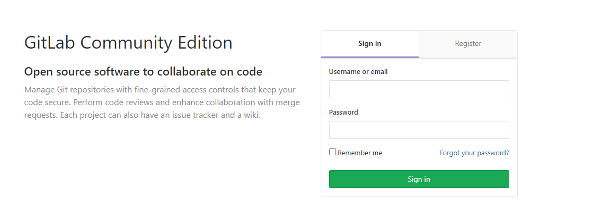
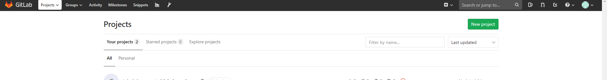
配置gitlab-runner 我们可以部署全局的runner进行使用，也可以单独给某个项目部署runner
部署全局的runner进行使用 首先声明一个Configmap gitlab-runner.configmap.yaml来为Gitlab Runner提供需要的环境变量以及一些资源约束信息
1 2 3 4 5 6 7 8 9 10 11 12 13 14 15 16 17 18 19 20 21 22 23 24 25 26 apiVersion: v1data: REGISTER_NON_INTERACTIVE: "true" REGISTER_LOCKED: "false" METRICS_SERVER: "0.0.0.0:9100" CI_SERVER_URL: "http://gitlab.gitlab.svc.cluster.local/ci" # k8s内gitlab服务的通信地址格式:svc.namespace.svc.cluster.local, 同时加上/ci这个prefix，这里也可以使用外网访问地址 RUNNER_REQUEST_CONCURRENCY: "4" RUNNER_EXECUTOR: "kubernetes" KUBERNETES_NAMESPACE: "gitlab" # 服务运行的namespace KUBERNETES_PRIVILEGED: "true" KUBERNETES_CPU_LIMIT: "1" KUBERNETES_MEMORY_LIMIT: "1Gi" KUBERNETES_SERVICE_CPU_LIMIT: "1" KUBERNETES_SERVICE_MEMORY_LIMIT: "1Gi" KUBERNETES_HELPER_CPU_LIMIT: "500m" KUBERNETES_HELPER_MEMORY_LIMIT: "100Mi" KUBERNETES_PULL_POLICY: "if-not-present" # image的拉取策略 KUBERNETES_TERMINATIONGRACEPERIODSECONDS: "10" KUBERNETES_POLL_INTERVAL: "5" KUBERNETES_POLL_TIMEOUT: "360" kind: ConfigMapmetadata: labels: app: gitlab-ci-runner name: gitlab-ci-runner-cm namespace: gitlab
同样的，还需要准备一个Configmapgitlab-ci-runner-scripts.configmap.yml存储清理未被正常调度的Gitlab Runner的Pod. 正常来说，Gitlab runner在完成自己的使命之后，Kubernetes就会发送一个TERM signal信号用于正常的注销Gitlab runner, 所以那些被强制终止的Pod是不会自动的被清理的，而这个脚本就是完成这部分Pod的清理工作。
1 2 3 4 5 6 7 8 9 10 11 12 13 14 15 16 17 18 19 20 21 22 23 apiVersion: v1 data: run.sh: | unregister kill %1 echo "Unregistering runner ${RUNNER_NAME} ..." /usr/bin/gitlab-ci-multi-runner unregister -t "$(/usr/bin/gitlab-ci-multi-runner list 2>&1 | tail -n1 | awk '{print $4}' | cut -d'=' -f2) " -n ${RUNNER_NAME} exit $? } trap 'unregister' EXIT HUP INT QUIT PIPE TERM echo "Registering runner ${RUNNER_NAME} ..." /usr/bin/gitlab-ci-multi-runner register -r ${GITLAB_CI_TOKEN} sed -i 's/^concurrent.*/concurrent = ' "${RUNNER_REQUEST_CONCURRENCY} " '/' /home/gitlab-runner/.gitlab-runner/config.toml echo "Starting runner ${RUNNER_NAME} ..." /usr/bin/gitlab-ci-multi-runner run -n ${RUNNER_NAME} & wait kind: ConfigMap metadata: labels: app: gitlab-ci-runner name: gitlab-ci-runner-scripts namespace: gitlab
我们需要创建一个Secretgitlab-ci-token-secret.yaml来存储Gitlab Runner的Token.以便上面的脚本能正常的运行，在secret内需要存放base64加密后的字符串。
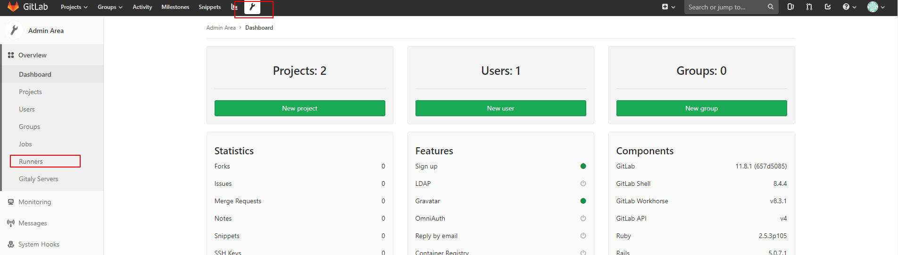
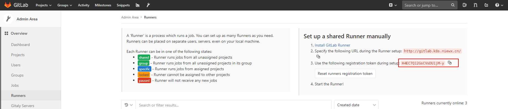
获取后对token进行base64编码
1 echo H4EC7Q12GsCVsDU1jM-y | base64
然后配置到secret中
1 2 3 4 5 6 7 8 9 apiVersion: v1kind: Secretmetadata: name: gitlab-ci-token namespace: gitlab # 指定命名空间 labels: app: gitlab-ci-runnerdata: GITLAB_CI_TOKEN: SDRFQzdRMTJHc0NWc0RVMWpNLXkK # 这是base64加密Gitlab runner token之后的字符串
我们通过sts(statefulset控制器)gitlab-runner-sts.yaml创建Gitlab Runner。在开始运行的时候，尝试取消注册所有的同名 Runner，当节点丢失时（NodeLost事件）尤其有用。然后再尝试重新注册自己并开始运行。在正常停止 Pod 的时候，Runner 将会运行unregister命令来尝试取消自己，所以 Gitlab 就不能再使用这个 Runner 了，这个是通过 Kubernetes Pod 生命周期中的hooks来完成的，在运行Gitlab Runner的时候，我们通过Envfrom调用之前创建的脚本以及Gitlab runner运行需要的环境变量信息.
1 2 3 4 5 6 7 8 9 10 11 12 13 14 15 16 17 18 19 20 21 22 23 24 25 26 27 28 29 30 31 32 33 34 35 36 37 38 39 40 41 42 43 44 45 46 47 48 49 50 51 52 53 54 55 56 57 58 59 apiVersion: apps/v1 kind: StatefulSet metadata: name: gitlab-ci-runner namespace: gitlab labels: app: gitlab-ci-runner spec: updateStrategy: type: RollingUpdate replicas: 2 serviceName: gitlab-ci-runner selector: matchLabels: app: gitlab-ci-runner template: metadata: labels: app: gitlab-ci-runner spec: volumes: - name: gitlab-ci-runner-scripts projected: sources: - configMap: name: gitlab-ci-runner-scripts items: - key: run.sh path: run.sh mode: 0755 serviceAccountName: gitlab-ci securityContext: runAsNonRoot: true runAsUser: 999 supplementalGroups: [999] containers: - image: gitlab-runner:latest name: gitlab-ci-runner command: - /scripts/run.sh envFrom: - configMapRef: name: gitlab-ci-runner-cm - secretRef: name: gitlab-ci-token env: - name: RUNNER_NAME valueFrom: fieldRef: fieldPath: metadata.name ports: - containerPort: 9100 name: http-metrics protocol: TCP volumeMounts: - name: gitlab-ci-runner-scripts mountPath: "/scripts" readOnly: true restartPolicy: Always
从sts配置清单中看到，我们还需要一个ServiceAccount来有足够的权限做一些事情，因此我们创建一个gitlab-ci的ServiceAccount, 配置清单为:gitlab-runner-rbac.yaml
1 2 3 4 5 6 7 8 9 10 11 12 13 14 15 16 17 18 19 20 21 22 23 24 25 26 27 28 29 apiVersion: v1 kind: ServiceAccount metadata: name: gitlab-ci namespace: gitlab --- kind: Role apiVersion: rbac.authorization.k8s.io/v1 metadata: name: gitlab-ci namespace: gitlab rules: - apiGroups: [""] resources: ["*"] verbs: ["*"] --- kind: RoleBinding apiVersion: rbac.authorization.k8s.io/v1 metadata: name: gitlab-ci namespace: gitlab subjects: - kind: ServiceAccount name: gitlab-ci namespace: gitlab roleRef: kind: Role name: gitlab-ci apiGroup: rbac.authorization.k8s.io
上面都部署之后可以查看下runner是否连上了gitlab，runner状态为shared则表示正常。
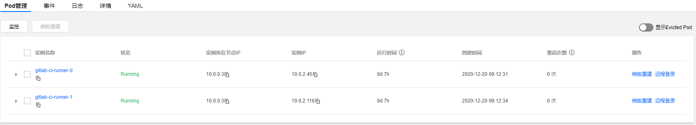
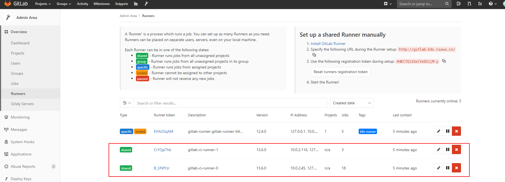
单独给某个项目部署runner 下面我们单独给某个项目配置一个runner，其实主要的区别就是采用token不一样。下面我们部署一下
首先我们将一个测试的项目上传到gitlab上，项目地址git clone https://github.com/haoshuwei/gitlab-ci-k8s-demo.git
然后我们获取一下项目的token
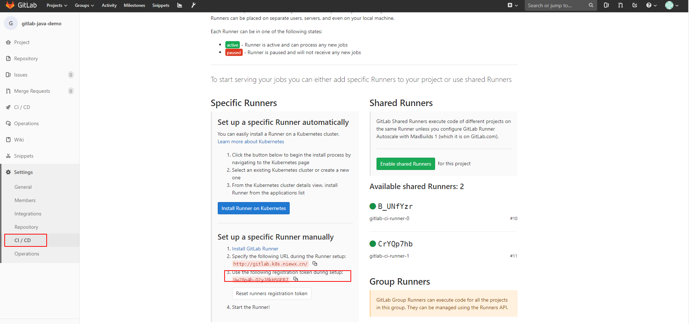
下面我们通过helm方式来部署下runner
1 git clone https ://github.com/haoshuwei/gitlab-runner.git
然后修改下value.yaml中的配置，主要是配置url和项目token进去，修改gitlabUrl和runnerRegistrationToken字段
1 2 3 4 5 6 7 8 9 10 11 12 13 14 15 16 17 18 19 20 21 22 23 24 25 26 27 28 29 30 31 32 33 34 35 36 37 38 39 40 41 42 43 44 45 46 47 48 49 50 51 52 53 54 55 56 57 58 59 60 61 62 63 64 65 66 67 68 69 70 71 72 73 74 75 76 77 78 79 80 81 82 83 84 85 86 87 88 89 90 91 92 93 94 95 96 97 98 99 100 101 102 103 104 105 106 107 108 109 110 111 112 113 114 115 116 117 118 119 120 121 122 123 124 125 126 127 128 129 130 131 132 133 134 135 136 137 138 139 140 141 142 143 144 145 146 147 148 149 150 151 152 153 154 155 156 157 158 159 160 161 162 163 164 165 166 167 168 169 170 171 172 173 174 175 176 177 178 179 180 181 182 183 184 185 186 187 188 189 190 191 192 193 194 195 196 197 # # # image: gitlab-runner:alpine-v11.4.0 # # # # imagePullPolicy: IfNotPresent # init: image: busybox tag: latest # # # gitlabUrl: "http://gitlab.k8s.niewx.cn/" # # # # runnerRegistrationToken: "Uw28p4b-Q2yJ8kHSGER7" # # # # # runnerToken: "" # # # # # # # # unregisterRunners: true # # # # # # certsSecretName: # # # concurrent: 10 # # # checkInterval: 30 # # # # logLevel: # rbac: create: true # # clusterWideAccess: false # # # serviceAccountName: default # # metrics: enabled: true # # runners: # # image: ubuntu:16.04 # # # # # imagePullSecrets: [] # # # imagePullPolicy: "" # # # locked: true # # # # tags: "k8s-runner" # # # # # privileged: true # # secret: gitlab-runner # # namespace: gitlab cachePath: "/opt/cache" # # # # # # # # # # # cache: {} # cacheType: s3 # s3ServerAddress: s3.amazonaws.com # s3BucketName: # s3BucketLocation: # s3CacheInsecure: false # s3CachePath: "gitlab_runner" # cacheShared: true # secretName: s3access # # builds: {} # cpuLimit: 200m # memoryLimit: 256Mi # cpuRequests: 100m # memoryRequests: 128Mi # # services: {} # cpuLimit: 200m # memoryLimit: 256Mi # cpuRequests: 100m # memoryRequests: 128Mi # # helpers: {} # cpuLimit: 200m # memoryLimit: 256Mi # cpuRequests: 100m # memoryRequests: 128Mi # image: gitlab-runner-helper:x86_64-latest # # # serviceAccountName: # # # cloneUrl: # # # resources: {} # limits: # memory: 256Mi # cpu: 200m # requests: # memory: 128Mi # cpu: 100m # # # # # # envVars: # - name: RUNNER_EXECUTOR # value: kubernetes
然后执行helm打包和部署命令进行部署
1 2 helm package . helm install
GitLab Runner对缓存方案的支持有限，所以您需要使用挂载Volume的方式做缓存。在上面的示例中，安装GitLab Runner时默认使用/opt/cache目录作为缓存空间。您也可以通过修改values.yaml文件中的runners.cachePath字段修改缓存目录。
例如，如需建立Maven缓存，您可以在variables下添加MAVEN_OPTS变量并指定本地缓存目录：
1 2 3 variables: KUBECONFIG: /etc/deploy/config MAVEN_OPTS: "-Dmaven.repo.local=/opt/cache/.m2/repository"
修改templates/configmap.yaml文件中的以下字段挂载docker.sock和用于cache的volume。
1 2 3 4 5 6 7 8 9 10 cat >>/home/gitlab-runner/.gitlab-runner/config .toml <<EOF [[runners.kubernetes.volumes.pvc]] name = "gitlab-runner-cache" mount_path = "{{ .Values.runners.cachePath }}" [[runners.kubernetes.volumes.host_path]] name = "docker" mount_path = "/var/run/docker.sock" read_only = true host_path = "/var/run/docker.sock" EOF
runner pod运行成功后，在项目中可以查看到Runners activated for this project，则表示连接gitlab成功
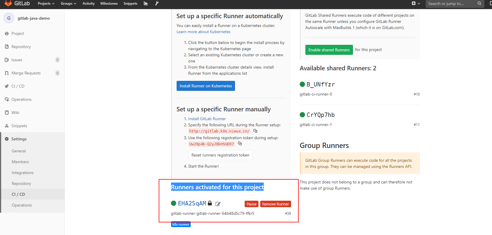
测试项目自动化部署到k8s集群中 下面我们分别用gitlab-java-demo和gitlab-ci-k8s-demo这2个项目来测试下通过项目runner和全局runner将代码部署到k8s集群中
项目runner部署gitlab-java-demo 首先我们给项目配置一下全局变量，.gitlab-ci.yml构建文件可以使用
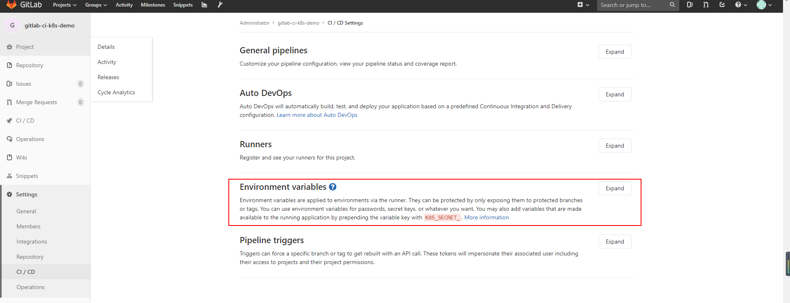
REGISTRY_USERNAME：镜像仓库用户名。 REGISTRY_PASSWORD：镜像仓库密码。 kube_config：KubeConfig的编码字符串。 执行以下命令生成KubeConfig的编码字符串：echo $(cat ~/.kube/config | base64) | tr -d “ “
.gitlab-ci.yml如下
1 2 3 4 5 6 7 8 9 10 11 12 13 14 15 16 17 18 19 20 21 22 23 24 25 26 27 28 29 30 31 32 33 34 35 36 37 38 image: docker:stable stages: - package - docker_build - deploy_k8s variables: KUBECONFIG: /etc/deploy/config MAVEN_OPTS: "-Dmaven.repo.local=/opt/cache/.m2/repository" mvn_build_job: image: maven:3.3 .9 -jdk-8 stage: package tag s: - k8s-runner scrip t: - mvn package -B -DskipTests - cp target/demo.war /opt /cache docker_build_job: image: docker:latest stage: docker_build tag s: - k8s-runner scrip t: - docker login -u $REGISTRY_USERNAME -p $REGISTRY_PASSWORD ccr.ccs.tencentyun.com - mkdir target - cp /opt /cache/demo.war target/demo.war - docker build -t ccr.ccs.tencentyun.com /v_cjweichen/nwx-reg: $CI_PIPELINE_ID . - docker push ccr.ccs.tencentyun.com /v_cjweichen/nwx-reg: $CI_PIPELINE_ID deploy_k8s_job: image: registry.cn -hangzhou.aliyuncs.com /haoshuwei24/kubectl:1 .16.6 stage: deploy_k8s tag s: - k8s-runner scrip t: - mkdir -p /etc/deploy - echo $kube_config |base64 -d > $KUBECONFIG - sed -i "s/IMAGE_TAG/$CI_PIPELINE_ID/g" deployment.yaml - cat deployment.yaml - kubectl apply -f deployment.yaml
将代码提交后则会自动构建，构建成功会根据项目的deployment.yaml文件将pod部署k8s集群中。
全局runner部署gitlab-ci-k8s-demo 测试代码如下：https://github.com/nieweixing/gitlab-ci-k8s-demo
首先我们给项目配置一下全局变量，.gitlab-ci.yml构建文件可以使用
分配配置如下几个变量
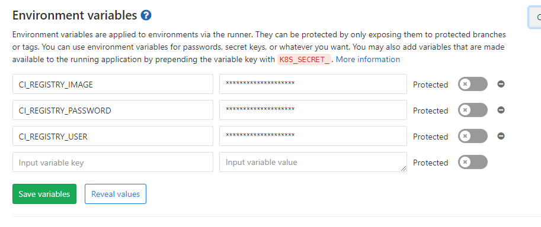
镜像地址：CI_REGISTRY_IMAGE 镜像仓库密码：CI_REGISTRY_PASSWORD 镜像仓库用户名：CI_REGISTRY_USER 为了能够创建和删除一些资源，我们也需要对象的 RBAC 权限，这里为了简单，我们直接新建一个ServiceAccount，绑定上一个tke:admin的权限(gitlab-sa.yaml)
1 2 3 4 5 6 7 8 9 10 11 12 13 14 15 16 17 18 19 20 21 --- apiVersion: v1 kind: ServiceAccount metadata: name: gitlab namespace: gitlab --- apiVersion: rbac.authorization.k8s.io/v1beta1 kind: ClusterRoleBinding metadata: name: gitlab namespace: gitlab subjects: - kind: ServiceAccount name: gitlab namespace: gitlab roleRef: apiGroup: rbac.authorization.k8s.io kind: ClusterRole name: tke:admin
然后我们获取一下ServiceAccount的token和集群的ca证书，已经api地址，进行k8s集群的配置
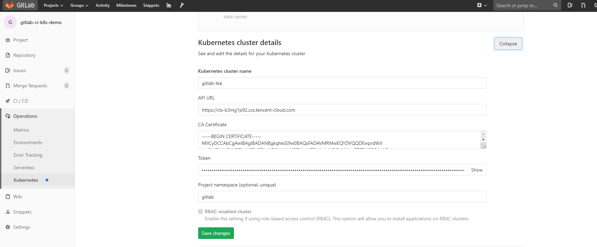
下面我们配置一下.gitlab-ci.yml，内容如下
1 2 3 4 5 6 7 8 9 10 11 12 13 14 15 16 17 18 19 20 21 22 23 24 25 26 27 28 29 30 31 32 33 34 35 36 37 38 39 40 41 42 43 44 45 46 47 48 49 50 51 52 53 54 55 56 57 58 59 60 61 62 63 64 65 66 67 68 69 70 71 72 73 74 75 76 77 78 79 80 81 82 83 84 85 86 87 88 89 90 91 92 93 94 95 96 97 98 99 100 101 102 103 104 105 106 107 108 109 110 111 112 113 114 115 116 117 118 119 120 121 122 123 124 125 126 image: name: golang:1.10.3-stretch entrypoint: ["/bin/sh", "-c" ] before_script: - mkdir -p "/go/src/git.qikqiak.com/${CI_PROJECT_NAMESPACE}" - ln -sf "${CI_PROJECT_DIR}" "/go/src/git.qikqiak.com/${CI_PROJECT_PATH}" - cd "/go/src/git.qikqiak.com/${CI_PROJECT_PATH}/" stages: - test - build - release - review - deploy test: stage: test script: - make test test2: stage: test script: - sleep 3 - echo "We did it! Something else runs in parallel!" compile: stage: build script: - make build artifacts: paths: - app image_build: stage: release image: docker:latest variables: DOCKER_DRIVER: overlay DOCKER_HOST: tcp://localhost:2375 services: - name: docker:17.03-dind command: ["--insecure-registry=ccr.ccs.tencentyun.com"] script: - docker info - docker login -u "${CI_REGISTRY_USER}" -p "${CI_REGISTRY_PASSWORD}" ccr.ccs.tencentyun.com - docker build -t "${CI_REGISTRY_IMAGE}:latest" . - docker tag "${CI_REGISTRY_IMAGE}:latest" "${CI_REGISTRY_IMAGE}:${CI_COMMIT_REF_NAME}" - test ! -z "${CI_COMMIT_TAG}" && docker push "${CI_REGISTRY_IMAGE}:latest" - docker push "${CI_REGISTRY_IMAGE}:${CI_COMMIT_REF_NAME}" deploy_review: image: cnych/kubectl stage: review only: - branches except: - tags environment: name: dev url: http://dev-gitlab-k8s-demo.k8s.niewx.cn on_stop: stop_review script: - kubectl version - cd manifests/ - sed -i "s/__CI_ENVIRONMENT_SLUG__/${CI_ENVIRONMENT_SLUG}/" deployment.yaml ingress.yaml service.yaml - sed -i "s/__VERSION__/${CI_COMMIT_REF_NAME}/" deployment.yaml ingress.yaml service.yaml - | if kubectl apply -f deployment.yaml | grep -q unchanged; then echo "=> Patching deployment to force image update." kubectl patch -f deployment.yaml -p "{\"spec\":{\"template\":{\"metadata\":{\"annotations\":{\"ci-last-updated\":\"$(date +'%s')\"}}}}}" else echo "=> Deployment apply has changed the object, no need to force image update." fi - kubectl apply -f service.yaml || true - kubectl apply -f ingress.yaml - kubectl rollout status -f deployment.yaml - kubectl get all,ing -l ref=${CI_ENVIRONMENT_SLUG} stop_review: image: cnych/kubectl stage: review variables: GIT_STRATEGY: none when: manual only: - branches except: - master - tags environment: name: dev action: stop script: - kubectl version - kubectl delete ing -l ref=${CI_ENVIRONMENT_SLUG} - kubectl delete all -l ref=${CI_ENVIRONMENT_SLUG} deploy_live: image: cnych/kubectl stage: deploy environment: name: live url: http://live-gitlab-k8s-demo.k8s.niewx.cn only: - tags when: manual script: - kubectl version - cd manifests/ - sed -i "s/__CI_ENVIRONMENT_SLUG__/${CI_ENVIRONMENT_SLUG}/" deployment.yaml ingress.yaml service.yaml - sed -i "s/__VERSION__/${CI_COMMIT_REF_NAME}/" deployment.yaml ingress.yaml service.yaml - kubectl apply -f deployment.yaml - kubectl apply -f service.yaml - kubectl apply -f ingress.yaml - kubectl rollout status -f deployment.yaml - kubectl get all,ing -l ref=${CI_ENVIRONMENT_SLUG}
对应的部署yaml文件如下
部署deloyment文件
1 2 3 4 5 6 7 8 9 10 11 12 13 14 15 16 17 18 19 20 21 22 23 24 25 26 27 28 29 30 31 32 33 34 35 36 37 38 39 40 41 42 43 44 45 --- apiVersion: apps/v1 kind: Deployment metadata: name: gitlab-k8s-demo-__CI_ENVIRONMENT_SLUG__ namespace: gitlab labels: app: gitlab-k8s-demo ref: __CI_ENVIRONMENT_SLUG__ track: stable spec: replicas: 2 selector: matchLabels: app: gitlab-k8s-demo ref: __CI_ENVIRONMENT_SLUG__ template: metadata: labels: app: gitlab-k8s-demo ref: __CI_ENVIRONMENT_SLUG__ track: stable spec: imagePullSecrets: - name: myregistry containers: - name: app image: ccr.ccs.tencentyun.com/v_cjweichen/nwx-reg:__VERSION__ imagePullPolicy: Always ports: - name: http-metrics protocol: TCP containerPort: 8000 livenessProbe: httpGet: path: /health port: 8000 initialDelaySeconds: 3 timeoutSeconds: 2 readinessProbe: httpGet: path: /health port: 8000 initialDelaySeconds: 3 timeoutSeconds: 2
service yaml文件
1 2 3 4 5 6 7 8 9 10 11 12 13 14 15 16 17 18 19 20 21 22 apiVersion : v1kind : Servicemetadata : name : gitlab-k8s-demo-__CI_ENVIRONMENT_SLUG__ namespace : gitlab labels : app : gitlab-k8s-demo ref : __CI_ENVIRONMENT_SLUG__ annotations : prometheus.io/scrape : "true" prometheus.io/port : "8000" prometheus.io/scheme : "http" prometheus.io/path : "/metrics" spec : type : ClusterIP ports : - name : http-metrics port : 8000 protocol : TCP selector : app : gitlab-k8s-demo ref : __CI_ENVIRONMENT_SLUG__
traefik ingress暴露域名文件
1 2 3 4 5 6 7 8 9 10 11 12 13 14 apiVersion : traefik.containo.us/v1alpha1kind : IngressRoutemetadata : name : gitlab-k8s-demo-__CI_ENVIRONMENT_SLUG__ namespace : gitlab spec : entryPoints : - web routes : - match : Host(`__CI_ENVIRONMENT_SLUG__.k8s.niewx.cn` ) kind : Rule services : - name : gitlab-k8s-demo-__CI_ENVIRONMENT_SLUG__ port : 8000
将上述文件提交到gitlab就会自动执行构建，构建成功会把应用自动部署到k8s上
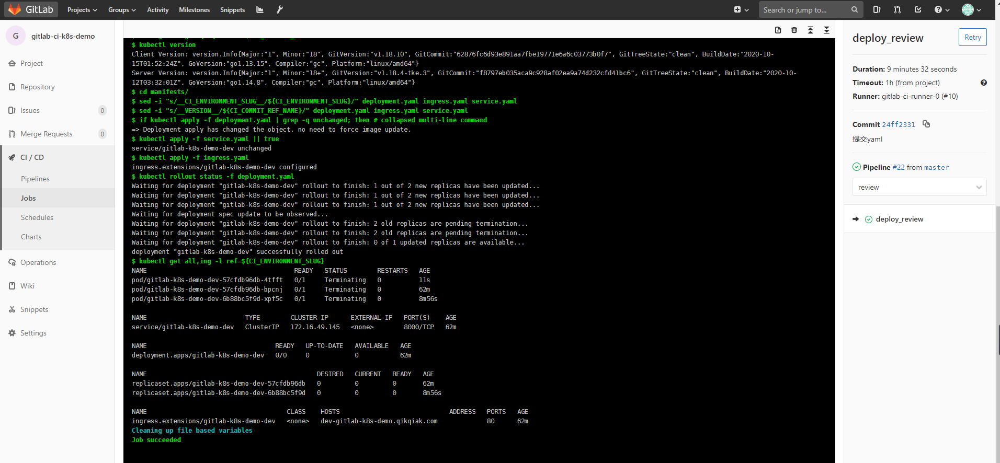
然后我们通过http://dev-gitlab-k8s-demo.k8s.niewx.cn访问下，如果出现如下信息则部署访问成功
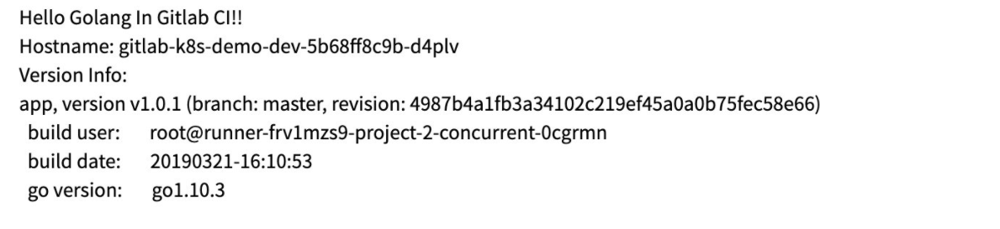
参考文档 https://www.qikqiak.com/post/gitlab-ci-k8s-cluster-feature/
https://mp.weixin.qq.com/s/GHykQWgEtDYgFIeRca8dBw
https://www.alibabacloud.com/help/zh/doc-detail/106968.htm?spm=a2c63.p38356.b99.660.3db53ce3ZRDjhM#title-xfl-dp6-kta
欢迎访问 Vashon 的博客，博客和文章在完善中，请大家耐心等待。 若有问题或者有好的建议欢迎留言，笔者看到之后会及时回复。 评论点赞需要github账号登录，如果没有账号的话请点击 github 注册， 谢谢 !
为正常使用来必力评论功能请激活JavaScript